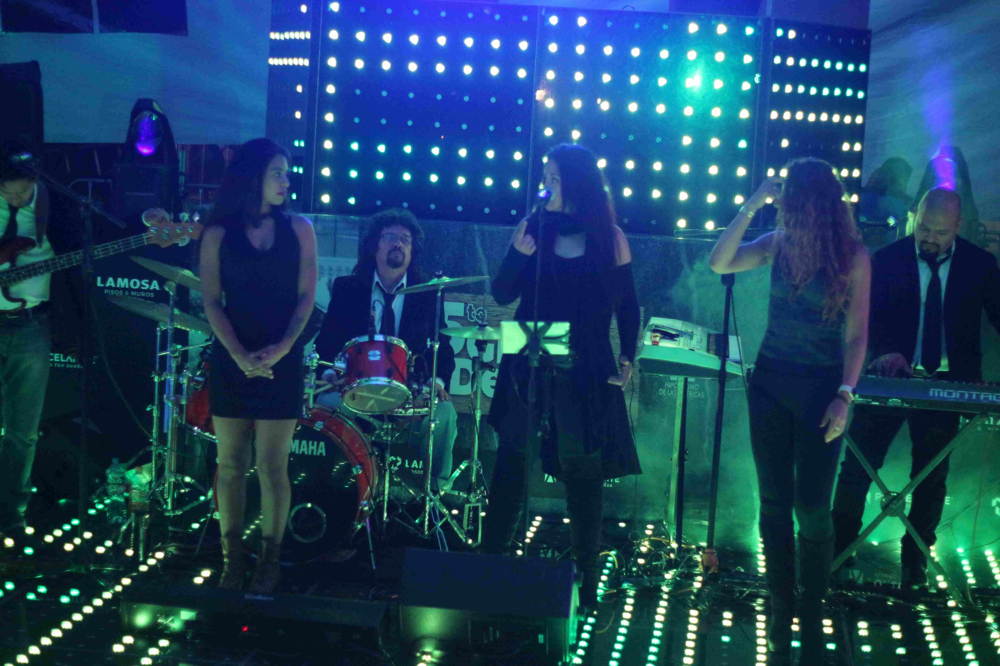

Organizar una boda perfecta no solo requiere elegir el vestido, el lugar o el banquete. La música es el corazón de la celebración, el motor que mantiene viva la pista de baile y une a todas las generaciones. Elegir los géneros adecuados puede marcar la diferencia entre una fiesta promedio y una noche que nadie olvidará.
En esta guía, descubrirás los 5 géneros musicales que no pueden faltar en tu boda y cómo un grupo versátil como Grupo Musical Versátil La Célula puede interpretarlos para que todos, desde los abuelos hasta los más jóvenes, disfruten al máximo.
La música en vivo tiene un impacto emocional incomparable. Mientras que un DJ puede cumplir su función, una banda versátil aporta energía, conexión y adaptabilidad en tiempo real. Los músicos profesionales leen el ambiente, ajustan el tempo y crean momentos mágicos que ninguna pista pregrabada puede igualar.
Al planificar tu boda, considera que cada género tiene su momento ideal. La clave está en crear un flujo musical que lleve a tus invitados por un viaje emocional: desde la ceremonia íntima hasta el cierre explosivo de la madrugada. Los siguientes cinco géneros forman la combinación perfecta para lograrlo.
1. Cumbia: El ritmo que une generaciones
La cumbia es sinónimo de fiesta en México y Latinoamérica. Con su ritmo contagioso y alegre, nadie se resiste a bailar cuando suenan los primeros acordes.
- Por qué funciona: Su versatilidad permite mezclar clásicos como "La Pollera Colorá" con éxitos modernos.
- Momento ideal: Cuando la fiesta ya está en pleno auge y quieres que nadie se quede sentado.
- Grupo Musical Versátil La Célula: Su repertorio de cumbias siempre logra encender la pista.
La cumbia tiene variantes para todos los gustos: desde la cumbia colombiana tradicional hasta la cumbia norteña mexicana. Un grupo versátil puede adaptar el estilo según el momento, iniciando con ritmos suaves durante la cena y acelerando cuando la fiesta lo requiera. Los pasos sencillos hacen que incluso quienes no bailan habitualmente se animen a participar.
2. Rock de los 80s: Energía y nostalgia
Los hits de los 80s tienen el poder de transportar a todos a una época dorada. Con solos de guitarra, baterías potentes y letras memorables, son perfectos para animar.
- Por qué funciona: Conecta con adultos y sorprende a los más jóvenes con clásicos que siguen vigentes.
- Canciones icónicas: "Livin’ on a Prayer", "I Love Rock 'n' Roll".
- Grupo Musical Versátil La Célula: Su set de rock ochentero siempre saca los mejores coros.
El rock de los 80s no solo es nostalgia; representa una época dorada de composiciones memorables. Las guitarras distorsionadas, los sintetizadores característicos y las voces potentes crean una atmósfera de celebración pura. Canciones como "Don't Stop Believin'" o "Sweet Child O' Mine" generan momentos corales inolvidables donde todos cantan al unísono.
3. Pop Actual: Los éxitos que todos cantan
Las canciones actuales no pueden faltar. Desde baladas pop para el primer baile hasta los hits de radio que todos conocen, el pop actual garantiza momentos llenos de emoción y energía.
- Por qué funciona: Mantiene a los invitados jóvenes en sintonía con lo que suena hoy.
- Ejemplos: "Shape of You" de Ed Sheeran, "Flowers" de Miley Cyrus.
- Grupo Musical Versátil La Célula: Adapta los éxitos del momento a un show en vivo con energía única.
4. Salsa: Pasión y sabor en la pista
Si buscas que tu boda tenga un toque tropical, la salsa es la clave. Sus ritmos acelerados y sus letras apasionadas invitan a bailar en pareja y en grupo.
- Por qué funciona: Crea momentos vibrantes y divertidos.
- Momento ideal: Después del banquete, para iniciar el baile con sabor.
- Grupo Musical Versátil La Célula: Su sección rítmica hace que cada salsa suene con fuerza y autenticidad.
5. Baladas Románticas: Para los momentos más emotivos
Las baladas son el alma de los momentos más íntimos: el primer baile, la dedicatoria a los padres o el cierre emotivo de la noche.
- Por qué funciona: Crea recuerdos cargados de sentimiento.
- Ejemplos: "Unchained Melody", "Por Ti Volaré".
- Grupo Musical Versátil La Célula: Interpreta cada balada con un toque especial que hace vibrar corazones.
Las baladas románticas pueden interpretarse con diferentes formatos: desde un dúo acústico con guitarra hasta el ensamble completo con arreglos sinfónicos. La versatilidad de una banda profesional permite adaptar cada balada al momento específico, ya sea un primer baile íntimo o una dedicatoria grupal que conmueva a todos los presentes.
¿Cómo seleccionar la mezcla perfecta para tu boda?
Cada boda es única, y la selección musical debe reflejar la personalidad de los novios. Un buen punto de partida es dividir tu evento en fases: ceremonia (música clásica o acústica), cóctel (jazz, bossa nova o pop suave), cena (variado pero moderado), apertura de pista (género favorito de los novios) y cierre (los éxitos más energéticos).
Comunica tus preferencias con claridad a la banda. Grupo Musical Versátil La Célula trabaja estrechamente con cada pareja para diseñar un repertorio personalizado que respete sus gustos pero también mantenga el equilibrio necesario para que todos los invitados disfruten. Su experiencia les permite sugerir combinaciones que funcionan y evitar errores comunes.
Conclusión: La clave está en la mezcla
La combinación de estos cinco géneros asegura una boda inolvidable. Cada momento tiene su música ideal, y contar con una banda versátil como Grupo Musical Versátil La Célula significa tener el repertorio perfecto para cada instante.
🎶 ¡Cotiza ahora con Célula!Preguntas Frecuentes (FAQs)
1. ¿Puedo personalizar el repertorio para mi boda?
¡Por supuesto! Grupo Musical Versátil La Célula adapta su música a tus gustos y los de tus invitados.
2. ¿Tocan también música para la ceremonia y la recepción?
Sí, cuentan con sets acústicos y elegantes para esos momentos.
3. ¿Pueden mezclar géneros durante el evento?
Claro, su especialidad es ser versátiles y leer la pista para mantenerla viva.
4. ¿Cómo puedo contratar a Grupo Musical Versátil La Célula?
Solo tienes que contactarnos aquí para recibir una cotización personalizada.